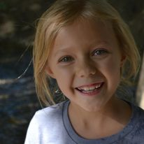

Unknowingly Enlisted
At five years old, Katherine Stewart (pictured below) was unexpectedly diagnosed with Type One diabetes. After noticing their daughter experiencing some odd symptoms, David Sr. and Brandi Stewart bounced from doctor to doctor looking for answers.

Eventually, a specialist correctly identified the symptoms present with Type One diabetes and told heartbroken parents about the sudden lifestyle change that had to occur.
No longer would their little girl be able to eat anything at any time, but she would have to be monitored closely, with every last nutrient accounted for. If she forgot to inject insulin at any time, the result could be fatal.
The Aftermath
After Katherine was diagnosed, Brandi and David tried to find ways to do their part in finding a cure for T1D. They started volunteering at JDRF's annual diabetes walk and volunteered at other fundraisers.
A few years after his daughter developed T1D, David decided to pull the trigger on an idea he'd been kicking around his brain and began to accumulate Christmas lights. He had a mental image of a community united in the spirit of Christmas, bathed in the multi-colored beauty of a light show dedicated to cure Type One diabetes.
Over the next couple years, the humble collection of lights grew to an amount that could've rivaled that of Clark Griswold's. After planning every last detail, David finally had enough lights to set up his very own small show.
Little did he know (or Brandi, for that matter), that this light show was going to span over a decade, seeing borderline exponential growth annually. Old lights would be phased out, new displays would be put in. As Christmas light technology improved. so did the light show. David began to incorporate fireworks and food into the mix, and it lit the community on fire.
Therefore, What?
An honest effort by a father to help his little girl developed into a common household tradition throughout Utah county. The idea of Christmas Lights for a Cure has become a living testimony to the positive effect a single individual can have on the world at large. There is no such thing as a dream too big for any one person.